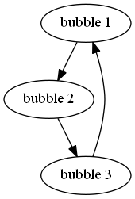
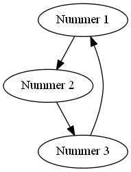

antiweb¶
Installation¶
The most important parts of the system are Python 3, Sphinx and antiweb. Because of incompatibility with Python 2 you can’t create documentaries of Python 2 programs.
- Step 1: Install Python 3.4
- Step 2: After installing Python, run below commands in cmd (you have to navigate to Python\Scripts first)
The code begins in file antiweb.py at line 2640:
pip install sphinx
- IMPORTANT: If you get a connection error the reason is most likely your proxy. You then have to use a tool like “cntlm” and add a proxy flag when running pip, example:
The code begins in file antiweb.py at line 2646:
pip install sphinx --proxy http://localhost:8123 //in case you are using cntlm your proxy will be localhostThe code begins in file antiweb.py at line 2650:
pip uninstall babel //uninstall it because of incompatibilityThe code begins in file antiweb.py at line 2654:
pip install babel==1.3 //install compatible version
Run sphinx-quickstart.exe and follow the steps to configure sphinx as you like it. (However, say yes to all extensions suggested during the process)
The sphinx quickstart created a project folder for you, open the conf.py which is in that folder
You should find something like this:
The code begins in file antiweb.py at line 2662:
Add ‘sphinx.ext.graphviz’ at the end and it will look like this:
The code begins in file antiweb.py at line 2677:
Download the Graphviz msi installer from here: http://www.graphviz.org/Download_windows.php
After installing Graphviz you will find a Graphviz folder inside your Program folder, open it
Copy the content of its bin folder to Python\Scripts
Preparing the .rst files¶
- Download antiweb from here https://github.com/Yarmek/antiweb and copy the antiweb.py file into the Python folder
- You can now create a .rst file out of a C, C++, C# and py files.
- To do that, simply use following command:
The code begins in file antiweb.py at line 2703:
python antiweb.py "PATH TO THE FILE"
- You will then find a new file which is called “Filename”.rst -> This file will be used in Sphinx to generate the documentation
- Sphinx also created a index.rst file for you. Open it and add the filename of the rst file (without the file extension) to the toctree so it looks like this:
The code begins in file antiweb.py at line 2710:
.. toctree:: :maxdepth: 2 FILENAME
- You can add multiple files, they will then be listed in the generated index of your project
- It is also possible to use Graphviz for graph visualizatin. A proper graph should look like this:
The code begins in file antiweb.py at line 2719:
.. digraph:: name "bubble 1" -> "bubble 2" -> "bubble 3" -> "bubble 1";
- The output from above code would look like this:

- For more informatin on Graphviz visit http://www.graphviz.org/
- When you have included the rst file in the index file, you can run Sphinx to finally create your documentation, here is an example:
The code begins in file antiweb.py at line 2733:
sphinx-build.exe -b html sphinx\source sphinx\source -D graphviz_dot=dot.exe
- The ‘’-b’’ flag indicates the builder to use
- ‘’sphinx\source’’ indicates the path to the index.rst
- ‘’sphinx\source’’ this one indicates the output path (you can change your ouput path to every path where you want the final documentation)
- ‘’-D graphviz_dot=dot.exe’’ indicates the path for the graphviz virtualizer dot.exe
- After sphinx has finished you will find some .html files in the output path. This is your finished documentation.
Antiweb documentation¶
If you just want to generate the documentation from a source file use the following function:
-
generate(fname, tokens, warnings)¶ Generates a rst file from a source file.
Parameters: - fname (string) – The path to the source file.
- tokens (list) – A list of string tokens, used for @if directives.
- show_warnings (bool) – Warnings will be written via the logging module.
The code begins in file antiweb.py at line 2465:
1 2 3 4 5 6 7 8 9 10 11 12 13
def generate(fname, tokens, show_warnings=False): try: with open(fname, "r") as f: text = f.read() except IOError: logger.error("file not found: %s", fname) sys.exit(1) lexer = pm.get_lexer_for_filename(fname) reader = readers.get(lexer.name, Reader)(lexer) document = Document(text, reader, fname, tokens) return document.process(show_warnings)
Objects¶
The graph below show the main objects of antiweb:
The graph below show the main objects of antiweb:
![digraph collaboration {
Dokument [shape=box, label="Dokument"]
Reader [shape=box, label="Reader"]
directives [shape=box, label="Directive" ]
Bloecke [shape=box]
Linien [shape=box]
Dokument -> Reader [label="benutzt"]
Reader -> directives [label="erstellt"]
Dokument -> directives [label="benutzt"]
Dokument -> Bloecke [label="beinhaltet"]
directives -> Bloecke [label="verarbeitet"]
Bloecke -> Linien [label="beinhaltet"]
Linien -> directives [label="beinhaltet"]
}](_images/graphviz-044ef63b69cde09bb36b33a7bd75a02bbcf59545.png)
The
documentmanages the complete transformation: It uses areaderto parse source code. Thereadercreates directives objects for each found antiweb directive in the source code. The source code is split in text blocks which consists of severallines. Thedocumentprocess all directives to generate the output document.
Directives¶
Directive¶
-
class
Directive(line[, mo])¶ The base class of all directives. Directives can be distinguished by the different tasks, they handle, these Task are generally:
- identifying a text block (
collect_block()) - inserting text in the output (
process()) - modifying text in the output (
process()) - deleting text in the output (
process())
Parameters: - line – the line number the directive was found
- mo – a match object of an regular expression
The code begins in file antiweb.py at line 320:
1 2 3 4 5 6 7 8 9 10 11 12
class Directive(object): #Attributes <<Directive.expression>> <<Directive.priority>> <<Directive.line>> #Methods <<Directive.__init__>> <<Directive.collect_block>> <<Directive.process>> <<Directive.match>> <<Directive.__repr__>>-
expression¶ A regular expression defining the directive.
The code begins in file antiweb.py at line 357:
expression = ""
-
priority¶ An integer process priority. Directives with a lower priority will be processed earlier.
The code begins in file antiweb.py at line 364:
priority = 10
-
line¶ A integer defining the original line number of the directive.
The code begins in file antiweb.py at line 372:
line = None
-
__init__(line[, mo])¶ The constructor
The code begins in file antiweb.py at line 382:
def __init__(self, line, mo=None): self.line = line
-
collect_block(document, index)¶ This method is called by
Document. If the directive is defining a text block. It retrieves the text lines of the block from the document and return them.Parameters: - document (
Document) – the document calling the function. - index (integer) – the line index of the directive.
Returns: If the directive collects a block the return value is a tuple
(directive name, block of lines), orNoneotherwise.The code begins in file antiweb.py at line 392:
def collect_block(self, document, index): return None
- document (
-
process(document, block, index)¶ This method is called by
Document. The directive should do whatever it is supposed to do.Parameters: - document (
Document) – the document calling the function. - block – The line block the directive is in.
- index (integer) – the line index of the directive within the block.
The code begins in file antiweb.py at line 413:
def process(self, document, block, index): pass
- document (
-
match(lines)¶ This method is called by
Document. It gives the directive the chance to find and manipulate other directives.Parameters: lines (list) – a list of all document lines. The code begins in file antiweb.py at line 430:
def match(self, lines): pass
-
__repr__()¶ returns a textual representation of the directive.
The code begins in file antiweb.py at line 444:
def __repr__(self): return "<%s at %i>" % (self.__class__.__name__, self.line)
- identifying a text block (
NameDirective¶
-
class
NameDirective(line, mo)¶ The base class for directives with a name argument. It inherits
Directive.Parameters: - line – the line number the directive was found
- mo – a match object of an regular expression or a string defining the name.
-
name¶ A string defining the argument of the directive.
The code begins in file antiweb.py at line 455:
1 2 3 4 5 6 7 8 9 10 11 12
class NameDirective(Directive): def __init__(self, line, mo): super(NameDirective, self).__init__(line, mo) if isinstance(mo, str): self.name = mo else: self.name = mo.group(1) def __repr__(self): return "<%s(%s) %i>" % (self.__class__.__name__, self.name, self.line)
Start¶
-
class
Start¶ This class represents a
@startdirective. It inheritsNameDirective.The
@startdirective defines the beginning of a text block. It is called with an argument defining the name of the text block. There are two special text blocks:()The empty one defining the main text block(__macro__)defining a text block for implementing macros.
There are several possibilities to end a text block.
- The end of the file
- A line with a smaller indentation as the
@startdirective. - Another start directive with same indentation.
- An unnamed end (
@) directive with the same indentation as the@startdirective. - A named end directive closing this block or an outer block.
Text blocks defined by
@startcan be nested.The code begins in file antiweb.py at line 490:
1 2 3 4 5 6 7 8 9
class Start(NameDirective): #Attributes <<Start.has_named_end>> <<Start.inherited attributes>> #Methods <<Start._find_matching_end>> <<Start.collect_block>> <<Start.process>>-
has_named_end¶ A boolean value, signalizing if the directive is ended by a named end directive.
The code begins in file antiweb.py at line 539:
has_named_end = False
<<Start.inherited attributes>>
The code begins in file antiweb.py at line 547:
expression = re.compile(r"@start\((.*)\)") priority = 5
-
collect_block(document, index)¶ See
Directive.collect_block(). The returned lines are unindented to column 0.The code begins in file antiweb.py at line 602:
1 2 3 4 5 6 7 8 9 10 11 12 13 14
def collect_block(self, document, index): end = self._find_matching_end(document.lines[index:]) block = document.lines[index+1:index+end] reduce_block = list(filter(bool, block)) if not reduce_block: document.add_error(self.line, "Empty '%s' block" % self.name) return None #unindent the block, empty lines may not count (filter(bool, block)) indent_getter = operator.attrgetter("indent") min_indent = min(list(map(indent_getter, reduce_block))) block = [ l.clone().change_indent(-min_indent) for l in block ] return self.name, block
-
process(document, block, index)¶ See
Directive.process(). Removes all lines of the text block from the containing block.The code begins in file antiweb.py at line 625:
def process(self, document, block, index): end = self._find_matching_end(block[index:]) del block[index:index+end]
-
_find_matching_end(block)¶ Finds the matching end for the text block.
Parameters: block (list) – A list of lines beginning with start Returns: The line index of the found end. The code begins in file antiweb.py at line 553:
1 2 3 4 5 6 7 8 9 10 11 12 13 14 15 16 17 18 19 20 21 22 23 24 25 26 27 28 29 30 31 32 33 34 35 36 37 38 39
def _find_matching_end(self, block): if self.has_named_end: # ignore all other ending conditions and directly # find the matching end directive for j, l in enumerate(block[1:]): j += 1 d = l.directive if isinstance(d, End) and d.name == self.name: return j start_indent = block[0].indent for j, l in enumerate(block[1:]): j += 1 lindent = l.indent d = l.directive if isinstance(d, End): if d.name is None and lindent == start_indent: #case 4: An unnamed @ directive with the same indentation # as the @start directive. return j if d.start_line <= self.line: #case 5: A named @ directive closing this block # or an outer block. return j if isinstance(d, Start) and lindent == start_indent: #case 3: Another @start directive with same indentation. return j if lindent < start_indent and l: #case 2: A line with a smaller indentation as the @start directive. # (an empty line doesn't count) return j #case 1: The end of the file return len(block)
RStart¶
-
class
RStart¶ This class represents a
@rstartdirective. It inheritsStart.The
@rstartdirective works like the@startdirective. While@startremoves it’s block completely from the containing block.@rstartreplaces the lines with a<<name>>- Sentinel.The code begins in file antiweb.py at line 638:
1 2 3 4 5 6 7
class RStart(Start): expression = re.compile(r"@rstart\((.*)\)") def process(self, document, block, index): end = self._find_matching_end(block[index:]) line = block[index] block[index:index+end] = [ line.like("<<%s>>" % self.name) ]
CStart¶
-
class
CStart¶ This class represents a
@rstartdirective. It inheritsRStart.The
@cstart(name)directive is a replacement for@rstart(name) @code
The code begins in file antiweb.py at line 670:
1 2 3 4 5 6 7 8 9 10 11 12 13 14 15 16
class CStart(RStart): expression = re.compile(r"@cstart\((.*)\)") def collect_block(self, document, index): name_block = super(CStart, self).collect_block(document, index) if not name_block: return None name, block = name_block first = block[0] sd = [ Code(first.index) ] block.insert(0, first.like("@code").set(directives=sd, index=first.index-1)) return name, block
End¶
-
class
End¶ This class represents an end directive. It inherits
NameDirective.The end (
@) directive ends a text block.The code begins in file antiweb.py at line 712:
1 2 3 4 5 6 7 8 9 10 11 12 13 14 15 16 17 18 19 20 21 22 23 24 25 26 27 28
class End(NameDirective): expression = re.compile(r"@(\((.*)\))?\s*$", re.M) def __init__(self, line, mo): super(NameDirective, self).__init__(line, mo) self.start_line = self.line if isinstance(mo, str): self.name = mo else: self.name = mo.group(2) def match(self, lines): if self.name is None: return #find the matching start and inform it for the named end for l in reversed(lines[:self.line]): for d in l.directives: if isinstance(d, Start) and d.name == self.name: d.has_named_end = True self.start_line = d.line return def process(self, document, block, index): #completely remove the directive from the containing block del block[index]
Include¶
-
class
Include¶ This class represents an
@includedirective. It inheritsNameDirective.The
@includedirective inserts the contents of the text block with the same name. The lines have the same indentation as the@includedirective.The directive can have a second file argument. If given the directive inserts the text block of the specified file.
The code begins in file antiweb.py at line 974:
1 2 3 4 5 6 7 8 9 10 11 12 13 14 15 16 17 18 19 20 21 22 23 24 25 26 27 28 29 30 31 32
class Include(NameDirective): expression = re.compile(r"@include\((.+)\)") def process(self, document, block, index): #check if the name contains 2 arguments args = self.name.split(",") name = args.pop(0).strip() document.blocks_included.add(name) if args: #a file name is given, fetch block from that file fname = args[0].strip() subdoc = document.get_subdoc(fname) if subdoc: include = subdoc.get_compiled_block(name) else: include = None else: include = document.get_compiled_block(name) if not include: #print "error include", self.line, name document.add_error(self.line, "Cannot find text block: %s" % name) return #replace the directive with its content indent = block[index].indent include = [ l.clone().change_indent(indent) for l in include ] block[index:index+1] = include
RInclude¶
-
class
RInclude¶ This class represents an
@rincludedirective. It inheritsInclude.The
@rinclude(text block name)directive is a is a replacement for:.. _text block name: **<<text block name>>** @include(text block name)
The code begins in file antiweb.py at line 1034:
1 2 3 4 5 6 7 8 9 10 11 12
class RInclude(Include): expression = re.compile(r"@rinclude\((.+)\)") def process(self, document, block, index): l = block[index] super(RInclude, self).process(document, block, index) block[index:index] = [ l.like(""), l.like(".. _%s:" % self.name), l.like(""), l.like("**<<%s>>**" % self.name), l.like("") ]
Code¶
-
class
Code¶ This class represents an
@codedirective. It inheritsDirective.The
@codedirective starts a code block. All lines following@codewill be displayed as source code.- A
@codedirective ends, - if the text block ends
- if an
@edococcurs.
The content of the special macro
__codeprefix__is inserted before each code block.__codeprefix__is empty by default and can be defined by a@definedirective.The code begins in file antiweb.py at line 1102:
1 2 3 4 5 6 7 8 9 10 11 12 13 14 15 16 17 18 19 20 21 22 23 24 25
class Code(Directive): expression = re.compile(r"@code") def process(self, document, block, index): line = block[index] #change the indentation the code lines for j in range(index+1, len(block)): l = block[j] if isinstance(l.directive, Edoc): break block[j] = l.clone().change_indent(4).set(type='c') #insert the rst prefix sd = [Subst(self.line, "__codeprefix__")] new_block = [ line.like("@subst(__codeprefix__)").set(directives=sd), line.like("::"), line.like("") ] block[index:index+1] = new_block block.append(line.like(""))
- A
Edoc¶
-
class
Edoc¶ This class represents an
@edocdirective. It inheritsDirective.The
@edocdirective ends a previously started@codedirectiveThe code begins in file antiweb.py at line 1075:
class Edoc(Directive): expression = re.compile(r"@edoc") def process(self, document, block, index): del block[index]
If¶
-
class
If¶ This class represents an
@ifdirective. It inheritsNameDirective.The
@ifdirective is used for conditional weaving. The content of an@if,@fiblock is waved if the named token argument of@if, is defined in the command line by the--tokenoption.The code begins in file antiweb.py at line 789:
1 2 3 4 5 6 7 8 9 10 11 12 13 14 15 16 17 18 19 20 21
class If(NameDirective): expression = re.compile(r"@if\((.+)\)") priority = 4 def process(self, document, block, index): line = block[index] for j in range(index+1, len(block)): d = block[j].directive if isinstance(d, Fi) and d.name == self.name: break else: document.add_error(self.line, "No fi for if %s" % self.name) return if self.name in document.tokens: del block[index] else: del block[index:j]
Fi¶
-
class
Fi¶ This class represents a @fi directive. It inherits
NameDirective.The
@fiends an@ifdirectiveThe code begins in file antiweb.py at line 762:
class Fi(NameDirective): expression = re.compile(r"@fi\((.+)\)") def process(self, document, block, index): del block[index]
Ignore¶
-
class
Ignore¶ This class represents an
@ignoredirective. It inheritsDirective.The
@ignoredirective ignores the line in the documentation output. It can be used for commentaries.The code begins in file antiweb.py at line 1159:
class Ignore(Directive): expression = re.compile("@ignore") def process(self, document, block, index): del block[index]
Define¶
-
class
Define¶ This class represents an
@definedirective. It inheritsNameDirective.The
@definedirective defines a macro, that can be used with a@substdirective. If asubstitutionargument is given, the macro defines an inline substitution. Otherwise the@definehas to be ended by an@enifeddirective.The code begins in file antiweb.py at line 834:
1 2 3 4 5 6 7 8 9 10 11 12 13 14 15 16 17 18 19 20 21 22 23 24 25
class Define(NameDirective): expression = re.compile(r"@define\((.+)\)") priority = 1 def process(self, document, block, index): args = self.name.split(",") name = args.pop(0).strip() if args: #more than one argument ==> an inline substitution document.macros[name] = args[0].strip() return #search for the matching @enifed for j in range(index+1, len(block)): d = block[j].directive if isinstance(d, Enifed) and d.name == name: break else: document.add_error(self.line, "No enifed for define %s" % name) return document.macros[name] = [ l.clone() for l in block[index+1:j] ]
Enifed¶
-
class
Enifed¶ This class represents an
@enifeddirective. It inheritsNameDirective.The
@enifeddirective ends a macro defined by the@definedirective.The code begins in file antiweb.py at line 884:
1 2 3 4 5 6
class Enifed(NameDirective): expression = re.compile(r"@enifed\((.+)\)") def process(self, document, block, index): del block[index]
Subst¶
-
class
Subst¶ This class represents a
@substdirective. It inheritsNameDirective.The
@substdirective is replaced by the substitution, defined by a@definedirective. There are two predefined macros:__line__- Define the current line within the source code. The
@substcan also handle operation with__line__like__line__ + 2. __file__- Defines the current source file name.
The code begins in file antiweb.py at line 912:
1 2 3 4 5 6 7 8 9 10 11 12 13 14 15 16 17 18 19 20 21 22 23 24 25 26 27 28 29 30
class Subst(NameDirective): expression = re.compile(r"@subst\((.+?)\)") priority = 2 def process(self, document, block, index): line = block[index] #find the substitution if self.name.startswith("__line__"): expression = self.name.replace("__line__", str(self.line+1)) subst = str(eval(expression)) elif self.name not in document.macros: document.add_error(self.line, "No macro %s found" % self.name) return else: subst = document.macros[self.name] if isinstance(subst, str): #inline substitution l = line.clone() l.text = line.text.replace("@subst(%s)" % self.name, subst) block[index] = l else: ln = line.index block[index:index+1] = [ l.clone(self.line+j)\ .change_indent(line.indent)\ .set(index=ln+j) for j, l in enumerate(subst) ]
Indent¶
-
class
Indent¶ This class represents an
@indentdirective. It inheritsDirective.The
@indentdirective changes the indentation of the following lines. For example a call@indent -4dedents the following lines by 4 spaces.The code begins in file antiweb.py at line 1187:
1 2 3 4 5 6 7 8 9 10 11 12
class Indent(Directive): expression = re.compile("@indent\s+([+-]?\d+)") def __init__(self, line, mo): super(Indent, self).__init__(line, mo) self.indent = int(mo.group(1)) def process(self, document, block, index): lines = [ l.clone().change_indent(self.indent) for l in block[index+1:] ] block[index:] = lines
Readers¶
Readers are responsible for the language dependent source parsing.
Reader¶
-
class
Reader(lexer)¶ This is the base class for all readers. The public functions exposed to
Documentareprocess(), andfilter_output().The main tasks for a reader is:
- Recognize lines that can contain directives. (comment lines or doc strings).
- Modify the source for language specific optimizations.
- Filter the processed output.
Parameters: lexer – A pygments lexer for the specified language The code begins in file antiweb.py at line 1253:
1 2 3 4 5 6 7 8 9 10 11 12 13
re_line_start = re.compile("^", re.M) #to find the line start indices class Reader(object): #Public Methods <<Reader.__init__>> <<Reader.process>> <<Reader.filter_output>> #Protected Methods <<Reader._accept_token>> <<Reader._post_process>> <<Reader._handle_token>> <<Reader._cut_comment>>-
__init__(lexer)¶ The constructor
The code begins in file antiweb.py at line 1288:
def __init__(self, lexer): self.lexer = lexer
-
process(fname, text)¶ Reads the source code and identifies the directives. This method is call by
Document.Parameters: - fname (string) – The file name of the source code
- text (string) – The source code
Returns: A list of
Lineobjects.The code begins in file antiweb.py at line 1298:
1 2 3 4 5 6 7 8 9 10 11 12 13 14
def process(self, fname, text): text = text.replace("\t", " "*8) starts = [ mo.start() for mo in re_line_start.finditer(text) ] lines = [ Line(fname, i, l) for i, l in enumerate(text.splitlines()) ] self.lines = lines # A list of lines self.starts = starts # the start indices of the lines tokens = self.lexer.get_tokens_unprocessed(text) for index, token, value in tokens: self._handle_token(index, token, value) self._post_process(fname, text) return self.lines
-
filter_output(lines)¶ This method is call by
Documentand gives the reader the chance to influence the final output.The code begins in file antiweb.py at line 1325:
def filter_output(self, lines): return lines
-
_handle_token(index, token, value)¶ Find antiweb directives in valid pygments tokens.
Parameters: - index (integer) – The index within the source code
- token – A pygments token.
- value (string) – The token value.
The code begins in file antiweb.py at line 1373:
1 2 3 4 5 6 7 8 9 10 11 12
def _handle_token(self, index, token, value): if not self._accept_token(token): return cvalue = self._cut_comment(index, token, value) offset = value.index(cvalue) found = False for k, v in list(directives.items()): for mo in v.expression.finditer(cvalue): li = bisect.bisect(self.starts, index+mo.start()+offset)-1 line = self.lines[li] line.directives = list(line.directives) + [ v(line.index, mo) ]
-
_cut_comment(index, token, value)¶ Cuts of the comment identifiers.
Parameters: - index (integer) – The index within the source code
- token – A pygments token.
- value (string) – The token value.
Returns: value without comment identifiers.
The code begins in file antiweb.py at line 1397:
def _cut_comment(self, index, token, value): return text
-
_post_process(fname, text)¶ Does some post processing after the directives where found.
The code begins in file antiweb.py at line 1353:
1 2 3 4 5 6 7 8 9 10 11 12
def _post_process(self, fname, text): #correct the line attribute of directives, in case there have #been lines inserted or deleted by subclasses of Reader for i, l in enumerate(self.lines): for d in l.directives: d.line = i #give the directives the chance to match for l in self.lines: for d in l.directives: d.match(self.lines)
-
_accept_token(token)¶ Checks if the token type may contain a directive.
Parameters: token – A pygments token Returns: Trueif the token may contain a directive.Falseotherwise.The code begins in file antiweb.py at line 1339:
def _accept_token(self, token): return True
CReader¶
-
class
CReader¶ A reader for C/C++ code. This class inherits
Reader.The code begins in file antiweb.py at line 1412:
1 2 3 4 5 6 7 8 9 10 11 12 13 14 15 16 17 18 19 20 21 22 23 24 25 26 27 28 29 30 31 32 33 34 35 36
class CReader(Reader): def _accept_token(self, token): return token in Token.Comment def _cut_comment(self, index, token, text): if text.startswith("/*"): text = text[2:-2] elif text.startswith("//"): text = text[2:] return text def filter_output(self, lines): """ .. py:method:: filter_output(lines) See :py:meth:`Reader.filter_output`. """ for l in lines: if l.type == "d": #remove comment chars in document lines stext = l.text.lstrip() if stext == '/*' or stext == "*/": #remove """ and ''' from documentation lines #see the l.text.lstrip()! if the lines ends with a white space #the quotes will be kept! This is feature, to force the quotes #in the output continue if stext.startswith("//") and not stext.startswith("#####"): #remove comments but not chapters l.text = l.indented(stext[2:]) yield l
PythonReader¶
‘’’ .. py:class:: PythonReader
A reader for python code. This class inherits
Reader. To reduce the number of sentinels, the python reader does some more sophisticated source parsing:A construction like:
is replaced by:
The replacement will be done only:
- If the doc string begins with “”“
- If the block was started by a
@rstartor@cstartdirective- If there is no antiweb directive in the doc string.
- Only a
@cstartwill insert the @include directive.Additionally the python reader removes all single line
"""and'''from documentation lines. In the following lines:@start(foo) """ Documentation """The
"""are automatically removed in the rst output. (seefilter_output()for details).
‘’‘
The code begins in file antiweb.py at line 1461:
class PythonReader(Reader): def __init__(self, lexer): super(PythonReader, self).__init__(lexer) self.doc_lines = [] <<PythonReader._post_process>> <<PythonReader._accept_token>> <<PythonReader._cut_comment>> <<PythonReader.filter_output>> class CSharpReader(Reader): def __init__(self, lexer): super(CSharpReader, self).__init__(lexer) self.doc_lines = [] <<PythonReader._post_process>> <<PythonReader._accept_token>> <<PythonReader._cut_comment>> <<PythonReader.filter_output>>
_post_process(fname, text)¶This implementation decorates doc strings with antiweb directives.
The code begins in file antiweb.py at line 1723:
def _post_process(self, fname, text): #from behind because we will probably insert some lines self.doc_lines.sort(reverse=True) #handle each found doc string for start_line, end_line in self.doc_lines: indents = set() <<no antiweb directives in doc string>> <<find the last directive before the doc string>> if isinstance(last_directive, RStart): <<decorate beginning and end>> if isinstance(last_directive, CStart): <<insert additional include>> super(CSharpReader, self)._post_process(fname, text)<<no antiweb directives in doc string>>
The code begins in file antiweb.py at line 1740:
<<find the last directive before the doc string>>
The code begins in file antiweb.py at line 1755:
last_directive = None for l in reversed(self.lines[:start_line]): if l.directives: last_directive = l.directives[0] break<<decorate beginning and end>>
The code begins in file antiweb.py at line 1764:
<<insert additional include>>
The code begins in file antiweb.py at line 1775:
_accept_token(token)¶The code begins in file antiweb.py at line 1798:
def _accept_token(self, token): return token in Token.Comment or token in Token.Literal.String.Doc
filter_output(lines)¶The code begins in file antiweb.py at line 1829:
_cut_comment(index, token, text)¶The code begins in file antiweb.py at line 1808:
Document¶
Document¶
-
class
Document(text, reader, fname, tokens)¶ This is the mediator communicating with all other classes to generate rst output.
Parameters: - text (string) – the source code to parse.
- reader – An instance of
Reader. - fname (string) – The file name of the source code.
- tokens – A sequence of tokens usable for the
@ifdirective.
The code begins in file antiweb.py at line 2113:
1 2 3 4 5 6 7 8 9 10 11 12 13 14 15 16 17 18 19 20 21 22 23 24 25 26 27 28 29 30 31 32 33 34 35 36 37 38 39 40 41 42 43 44 45 46 47 48 49 50 51 52 53 54 55 56 57 58 59 60 61 62 63 64 65 66 67 68 69 70 71 72 73 74 75 76 77 78 79 80 81 82 83 84 85 86 87 88 89 90 91 92 93 94 95 96 97 98 99 100 101 102 103 104 105 106 107 108 109 110 111 112 113 114 115 116 117 118 119 120 121 122 123 124 125 126 127 128 129 130 131 132 133 134 135 136 137 138 139 140 141 142 143 144 145 146 147 148 149 150 151 152 153 154 155 156 157 158 159 160 161 162 163 164 165 166 167 168 169 170 171 172 173 174 175 176 177 178 179 180 181 182 183 184 185 186 187 188 189 190 191 192 193 194 195 196 197 198 199 200 201 202 203 204 205 206 207 208 209 210 211 212 213 214 215 216 217 218 219 220 221 222 223 224 225 226 227 228 229 230 231 232 233 234 235 236 237 238 239 240 241 242 243 244 245 246 247 248 249 250 251 252 253 254 255 256 257 258 259 260 261 262 263 264 265 266 267 268 269 270 271 272 273 274 275 276 277 278 279 280 281 282 283 284 285 286 287 288 289 290 291 292 293 294 295 296 297 298 299 300 301 302 303 304 305 306 307 308 309 310 311 312 313 314 315 316 317 318 319 320 321 322 323 324 325 326 327 328 329 330 331 332 333 334 335 336 337 338 339 340 341 342 343 344 345 346 347 348 349 350 351 352 353 354 355 356 357 358 359 360 361 362 363 364 365 366 367 368 369 370 371 372 373 374 375 376 377 378 379 380 381 382 383 384 385 386 387 388 389 390 391 392 393 394 395 396 397 398 399 400 401 402 403 404 405 406 407 408 409 410 411 412 413 414 415 416 417 418 419 420 421 422 423 424 425 426 427 428 429 430 431 432 433 434 435 436 437 438 439 440 441 442 443 444 445 446 447 448 449 450 451 452 453 454 455 456 457 458 459 460 461 462 463 464 465 466 467 468 469 470 471 472 473 474 475 476 477 478 479 480 481 482 483 484 485 486 487 488 489 490 491 492 493 494 495 496 497 498 499 500 501 502 503 504 505 506 507 508 509 510 511 512 513 514 515 516 517 518 519 520 521 522 523 524 525 526 527 528 529 530 531 532 533 534 535 536 537 538 539 540 541 542 543 544 545 546 547 548 549 550 551 552 553 554 555 556 557 558 559 560 561 562 563 564 565 566 567 568 569 570 571 572 573 574 575 576 577 578 579 580 581 582 583 584 585 586 587 588 589 590 591 592 593 594 595 596 597 598 599 600 601 602 603 604 605 606 607 608 609 610 611 612 613 614 615 616 617 618 619 620 621 622 623 624 625 626 627 628 629 630 631 632 633 634 635 636 637 638 639 640 641 642 643 644 645 646 647 648 649 650 651 652 653 654 655 656 657 658 659 660 661 662 663 664 665 666 667 668 669 670 671 672 673 674 675 676 677 678 679 680 681 682 683 684 685 686 687 688 689 690 691 692 693 694 695 696 697 698 699 700 701 702 703 704 705 706 707 708 709 710 711 712 713 714 715 716 717 718 719 720 721 722 723 724 725 726 727 728 729 730 731 732 733 734 735 736 737 738 739 740 741 742 743 744 745 746 747 748 749 750 751 752 753 754 755 756 757 758 759 760 761 762 763 764 765 766 767 768 769 770 771 772
class Document(object): #Attributes The code begins in file antiweb.py at line 2113: :: class Document(object): #Attributes #@include(Document) .. py:attribute:: errors A list of errors found during generation. The code begins in file antiweb.py at line 2174: :: errors = [] .. py:attribute:: blocks A dictionary of all found blocks: Name -> List of Lines The code begins in file antiweb.py at line 2181: :: blocks = {} .. py:attribute:: blocks_included A set containing all block names that have been included by an @include directive. The code begins in file antiweb.py at line 2188: :: blocks_included = set() .. py:attribute:: compiled_blocks A set containing all block names that have been already compiled. The code begins in file antiweb.py at line 2196: :: compiled_blocks = set() .. py:attribute:: sub_documents A cache dictionary of sub documents, referenced by ``@include`` directives: Filename -> Document The code begins in file antiweb.py at line 2204: :: sub_documents = {} .. py:attribute:: tokens A set of token names that can be used for the ``@if`` directive. The code begins in file antiweb.py at line 2212: :: tokens = set() .. py:attribute:: macros A dictionary containing the macros that can be used by the ``@subst`` directive: Macro name -> substitution. The code begins in file antiweb.py at line 2219: :: macros = {} .. py:attribute:: fname The file name of the document's source. The code begins in file antiweb.py at line 2227: :: fname = "" .. py:attribute:: reader The instance of a :py:class:`Reader` object. The code begins in file antiweb.py at line 2234: :: reader = None .. py:attribute:: lines A list of :py:class:`Line` objects representing the whole documents split in lines. The code begins in file antiweb.py at line 2241: :: lines = [] .. py:method:: __init__(text, reader, fname, tokens) The constructor. The code begins in file antiweb.py at line 2252: :: def __init__(self, text, reader, fname, tokens): self.errors = [] self.blocks = {} self.blocks_included = set() self.compiled_blocks = set() self.sub_documents = {} self.tokens = set(tokens or []) self.macros = { "__file__" : os.path.split(fname)[-1], "__codeprefix__" : "" } self.fname = fname self.reader = reader self.lines = self.reader.process(fname, text) .. py:method:: process(show_warnings) Processes the document and generates the output. :param bool show_warnings: If ``True`` warnings are emitted. :return: A string representing the rst output. The code begins in file antiweb.py at line 2272: :: def process(self, show_warnings): self.collect_blocks() if "" not in self.blocks: self.add_error(0, "no @start() directive found (I need one)") self.check_errors() try: text = self.get_compiled_block("") finally: self.check_errors() if show_warnings: <<show warnings>> text = self.reader.filter_output(text) return "\n".join(map(operator.attrgetter("text"), text)) .. _show warnings: **<<show warnings>>** The code begins in file antiweb.py at line 2293: :: self.blocks_included.add("") #may not cause a warning self.blocks_included.add("__macros__") #may not cause a warning unincluded = set(self.blocks.keys())-self.blocks_included if unincluded: logger.warning("The following blocks were not included:") warnings = [ (self.blocks[b][0].index, b) for b in unincluded ] warnings.sort(key=operator.itemgetter(0)) for l, w in warnings: logger.warning(" %s(line %i)", w, l) .. py:method:: get_subdoc(rpath) Tries to compile a document with the relative path rpath. :param string rpath: The relative path to the root containing document. :return: A :py:class:`Document` reference to the sub document. The code begins in file antiweb.py at line 2310: :: def get_subdoc(self, rpath): <<return from cache if possible>> <<insert macros function>> <<read the source file>> self.sub_documents[rpath] = doc return doc .. _return from cache if possible: **<<return from cache if possible>>** The code begins in file antiweb.py at line 2321: :: try: return self.sub_documents[rpath] except KeyError: pass .. _insert macros function: **<<insert macros function>>** The code begins in file antiweb.py at line 2327: :: def insert_macros(subdoc): #if sub doc has no macros insert mine if ("__macros__" not in subdoc.blocks and "__macros__" in self.blocks): file_ = subdoc.macros["__file__"] # preserve __file__ subdoc.macros.update(self.macros) subdoc.macros["__file__"] = file_ .. _read the source file: **<<read the source file>>** The code begins in file antiweb.py at line 2336: :: head, tail = os.path.split(self.fname) fpath = os.path.join(head, rpath) try: #print "try open", fpath with open(fpath, "r") as f: text = f.read() except IOError: doc = None logger.error("Could not open: %s", fpath) else: #parse the file lexer = pm.get_lexer_for_filename(rpath) reader = readers.get(lexer.name, Reader)(lexer) doc = Document(text, reader, rpath, self.tokens) doc.collect_blocks() insert_macros(doc) .. py:method:: add_error(line, text) Adds an error to the list. :param integer line: The line number that causes the error. :param string text: An error text. The code begins in file antiweb.py at line 2365: :: def add_error(self, line, text): self.errors.append((self.lines[line], text)) .. py:method:: check_errors() Raises a ``WebError`` exception if error were found. The code begins in file antiweb.py at line 2378: :: def check_errors(self): if self.errors: raise WebError(self.errors) .. py:method:: collect_blocks() Collects all text blocks. The code begins in file antiweb.py at line 2388: :: def collect_blocks(self): blocks = [ d.collect_block(self, i) for i, l in enumerate(self.lines) for d in l.directives ] self.blocks = dict(list(filter(bool, blocks))) if "__macros__" in self.blocks: self.get_compiled_block("__macros__") .. py:method:: get_compiled_block(name) Returns the compiled version of a text block. Compiled means: all directives where processed. :param string name: The name of the text block: :return: A list of :py:class:`Line` objects representing the text block. The code begins in file antiweb.py at line 2405: :: def get_compiled_block(self, name): if name not in self.blocks: return None if name in self.compiled_blocks: return self.blocks[name] return self.compile_block(name, self.blocks[name]) .. py:method:: compile_block(name, block) Compiles a text block. :param string name: The name of the block :param block: A list of :py:class:`Line` objects representing the text block to compile. :return: A list of :py:class:`Line` objects representing the compiled text block. The code begins in file antiweb.py at line 2427: :: def compile_block(self, name, block): <<find_next_directive>> while True: directive_index = find_next_directive(block) if not directive_index: break directive, index = directive_index directive.process(self, block, index) self.compiled_blocks.add(name) return block .. _find_next_directive: **<<find_next_directive>>** The code begins in file antiweb.py at line 2440: :: def find_next_directive(block): # returns the next available directive min_line = [ (l.directives[0].priority, i) for i, l in enumerate(block) if l.directives ] if not min_line: return None prio, index = min(min_line) return block[index].directives.pop(0), index #Attributes <<Document.errors>> <<Document.blocks>> <<Document.blocks_included>> <<Document.compiled_blocks>> <<Document.sub_documents>> <<Document.tokens>> <<Document.macros>> <<Document.fname>> <<Document.reader>> <<Document.lines>> #Methods <<Document.__init__>> <<Document.process>> <<Document.get_subdoc>> <<Document.add_error>> <<Document.check_errors>> <<Document.collect_blocks>> <<Document.get_compiled_block>> <<Document.compile_block>> .. py:attribute:: errors A list of errors found during generation. The code begins in file antiweb.py at line 2174: :: errors = [] .. py:attribute:: blocks A dictionary of all found blocks: Name -> List of Lines The code begins in file antiweb.py at line 2181: :: blocks = {} .. py:attribute:: blocks_included A set containing all block names that have been included by an @include directive. The code begins in file antiweb.py at line 2188: :: blocks_included = set() .. py:attribute:: compiled_blocks A set containing all block names that have been already compiled. The code begins in file antiweb.py at line 2196: :: compiled_blocks = set() .. py:attribute:: sub_documents A cache dictionary of sub documents, referenced by ``@include`` directives: Filename -> Document The code begins in file antiweb.py at line 2204: :: sub_documents = {} .. py:attribute:: tokens A set of token names that can be used for the ``@if`` directive. The code begins in file antiweb.py at line 2212: :: tokens = set() .. py:attribute:: macros A dictionary containing the macros that can be used by the ``@subst`` directive: Macro name -> substitution. The code begins in file antiweb.py at line 2219: :: macros = {} .. py:attribute:: fname The file name of the document's source. The code begins in file antiweb.py at line 2227: :: fname = "" .. py:attribute:: reader The instance of a :py:class:`Reader` object. The code begins in file antiweb.py at line 2234: :: reader = None .. py:attribute:: lines A list of :py:class:`Line` objects representing the whole documents split in lines. The code begins in file antiweb.py at line 2241: :: lines = [] .. py:method:: __init__(text, reader, fname, tokens) The constructor. The code begins in file antiweb.py at line 2252: :: def __init__(self, text, reader, fname, tokens): self.errors = [] self.blocks = {} self.blocks_included = set() self.compiled_blocks = set() self.sub_documents = {} self.tokens = set(tokens or []) self.macros = { "__file__" : os.path.split(fname)[-1], "__codeprefix__" : "" } self.fname = fname self.reader = reader self.lines = self.reader.process(fname, text) .. py:method:: process(show_warnings) Processes the document and generates the output. :param bool show_warnings: If ``True`` warnings are emitted. :return: A string representing the rst output. The code begins in file antiweb.py at line 2272: :: def process(self, show_warnings): self.collect_blocks() if "" not in self.blocks: self.add_error(0, "no @start() directive found (I need one)") self.check_errors() try: text = self.get_compiled_block("") finally: self.check_errors() if show_warnings: <<show warnings>> text = self.reader.filter_output(text) return "\n".join(map(operator.attrgetter("text"), text)) .. _show warnings: **<<show warnings>>** The code begins in file antiweb.py at line 2293: :: self.blocks_included.add("") #may not cause a warning self.blocks_included.add("__macros__") #may not cause a warning unincluded = set(self.blocks.keys())-self.blocks_included if unincluded: logger.warning("The following blocks were not included:") warnings = [ (self.blocks[b][0].index, b) for b in unincluded ] warnings.sort(key=operator.itemgetter(0)) for l, w in warnings: logger.warning(" %s(line %i)", w, l) .. py:method:: get_subdoc(rpath) Tries to compile a document with the relative path rpath. :param string rpath: The relative path to the root containing document. :return: A :py:class:`Document` reference to the sub document. The code begins in file antiweb.py at line 2310: :: def get_subdoc(self, rpath): <<return from cache if possible>> <<insert macros function>> <<read the source file>> self.sub_documents[rpath] = doc return doc .. _return from cache if possible: **<<return from cache if possible>>** The code begins in file antiweb.py at line 2321: :: try: return self.sub_documents[rpath] except KeyError: pass .. _insert macros function: **<<insert macros function>>** The code begins in file antiweb.py at line 2327: :: def insert_macros(subdoc): #if sub doc has no macros insert mine if ("__macros__" not in subdoc.blocks and "__macros__" in self.blocks): file_ = subdoc.macros["__file__"] # preserve __file__ subdoc.macros.update(self.macros) subdoc.macros["__file__"] = file_ .. _read the source file: **<<read the source file>>** The code begins in file antiweb.py at line 2336: :: head, tail = os.path.split(self.fname) fpath = os.path.join(head, rpath) try: #print "try open", fpath with open(fpath, "r") as f: text = f.read() except IOError: doc = None logger.error("Could not open: %s", fpath) else: #parse the file lexer = pm.get_lexer_for_filename(rpath) reader = readers.get(lexer.name, Reader)(lexer) doc = Document(text, reader, rpath, self.tokens) doc.collect_blocks() insert_macros(doc) .. py:method:: add_error(line, text) Adds an error to the list. :param integer line: The line number that causes the error. :param string text: An error text. The code begins in file antiweb.py at line 2365: :: def add_error(self, line, text): self.errors.append((self.lines[line], text)) .. py:method:: check_errors() Raises a ``WebError`` exception if error were found. The code begins in file antiweb.py at line 2378: :: def check_errors(self): if self.errors: raise WebError(self.errors) .. py:method:: collect_blocks() Collects all text blocks. The code begins in file antiweb.py at line 2388: :: def collect_blocks(self): blocks = [ d.collect_block(self, i) for i, l in enumerate(self.lines) for d in l.directives ] self.blocks = dict(list(filter(bool, blocks))) if "__macros__" in self.blocks: self.get_compiled_block("__macros__") .. py:method:: get_compiled_block(name) Returns the compiled version of a text block. Compiled means: all directives where processed. :param string name: The name of the text block: :return: A list of :py:class:`Line` objects representing the text block. The code begins in file antiweb.py at line 2405: :: def get_compiled_block(self, name): if name not in self.blocks: return None if name in self.compiled_blocks: return self.blocks[name] return self.compile_block(name, self.blocks[name]) .. py:method:: compile_block(name, block) Compiles a text block. :param string name: The name of the block :param block: A list of :py:class:`Line` objects representing the text block to compile. :return: A list of :py:class:`Line` objects representing the compiled text block. The code begins in file antiweb.py at line 2427: :: def compile_block(self, name, block): <<find_next_directive>> while True: directive_index = find_next_directive(block) if not directive_index: break directive, index = directive_index directive.process(self, block, index) self.compiled_blocks.add(name) return block .. _find_next_directive: **<<find_next_directive>>** The code begins in file antiweb.py at line 2440: :: def find_next_directive(block): # returns the next available directive min_line = [ (l.directives[0].priority, i) for i, l in enumerate(block) if l.directives ] if not min_line: return None prio, index = min(min_line) return block[index].directives.pop(0), index #Attributes <<Document.errors>> <<Document.blocks>> <<Document.blocks_included>> <<Document.compiled_blocks>> <<Document.sub_documents>> <<Document.tokens>> <<Document.macros>> <<Document.fname>> <<Document.reader>> <<Document.lines>> #Methods <<Document.__init__>> <<Document.process>> <<Document.get_subdoc>> <<Document.add_error>> <<Document.check_errors>> <<Document.collect_blocks>> <<Document.get_compiled_block>> <<Document.compile_block>>-
errors¶ A list of errors found during generation.
The code begins in file antiweb.py at line 2174:
errors = []
-
blocks¶ A dictionary of all found blocks: Name -> List of Lines
The code begins in file antiweb.py at line 2181:
blocks = {}
-
blocks_included¶ A set containing all block names that have been included by an @include directive.
The code begins in file antiweb.py at line 2188:
blocks_included = set()
-
compiled_blocks¶ A set containing all block names that have been already compiled.
The code begins in file antiweb.py at line 2196:
compiled_blocks = set()
-
sub_documents¶ A cache dictionary of sub documents, referenced by
@includedirectives: Filename -> DocumentThe code begins in file antiweb.py at line 2204:
sub_documents = {}
-
tokens¶ A set of token names that can be used for the
@ifdirective.The code begins in file antiweb.py at line 2212:
tokens = set()
-
macros¶ A dictionary containing the macros that can be used by the
@substdirective: Macro name -> substitution.The code begins in file antiweb.py at line 2219:
macros = {}
-
fname¶ The file name of the document’s source.
The code begins in file antiweb.py at line 2227:
fname = ""
-
reader¶ The instance of a
Readerobject.The code begins in file antiweb.py at line 2234:
reader = None
-
lines¶ A list of
Lineobjects representing the whole documents split in lines.The code begins in file antiweb.py at line 2241:
lines = []
-
__init__(text, reader, fname, tokens)¶ The constructor.
The code begins in file antiweb.py at line 2252:
1 2 3 4 5 6 7 8 9 10 11 12
def __init__(self, text, reader, fname, tokens): self.errors = [] self.blocks = {} self.blocks_included = set() self.compiled_blocks = set() self.sub_documents = {} self.tokens = set(tokens or []) self.macros = { "__file__" : os.path.split(fname)[-1], "__codeprefix__" : "" } self.fname = fname self.reader = reader self.lines = self.reader.process(fname, text)
-
process(show_warnings)¶ Processes the document and generates the output.
Parameters: show_warnings (bool) – If Truewarnings are emitted.Returns: A string representing the rst output. The code begins in file antiweb.py at line 2272:
1 2 3 4 5 6 7 8 9 10 11 12 13 14 15 16
def process(self, show_warnings): self.collect_blocks() if "" not in self.blocks: self.add_error(0, "no @start() directive found (I need one)") self.check_errors() try: text = self.get_compiled_block("") finally: self.check_errors() if show_warnings: <<show warnings>> text = self.reader.filter_output(text) return "\n".join(map(operator.attrgetter("text"), text))<<show warnings>>
The code begins in file antiweb.py at line 2293:
1 2 3 4 5 6 7 8 9
self.blocks_included.add("") #may not cause a warning self.blocks_included.add("__macros__") #may not cause a warning unincluded = set(self.blocks.keys())-self.blocks_included if unincluded: logger.warning("The following blocks were not included:") warnings = [ (self.blocks[b][0].index, b) for b in unincluded ] warnings.sort(key=operator.itemgetter(0)) for l, w in warnings: logger.warning(" %s(line %i)", w, l)
-
get_subdoc(rpath)¶ Tries to compile a document with the relative path rpath.
Parameters: rpath (string) – The relative path to the root containing document. Returns: A Documentreference to the sub document.The code begins in file antiweb.py at line 2310:
1 2 3 4 5 6 7
def get_subdoc(self, rpath): <<return from cache if possible>> <<insert macros function>> <<read the source file>> self.sub_documents[rpath] = doc return doc<<return from cache if possible>>
The code begins in file antiweb.py at line 2321:
try: return self.sub_documents[rpath] except KeyError: pass
<<insert macros function>>
The code begins in file antiweb.py at line 2327:
1 2 3 4 5 6 7
def insert_macros(subdoc): #if sub doc has no macros insert mine if ("__macros__" not in subdoc.blocks and "__macros__" in self.blocks): file_ = subdoc.macros["__file__"] # preserve __file__ subdoc.macros.update(self.macros) subdoc.macros["__file__"] = file_
<<read the source file>>
The code begins in file antiweb.py at line 2336:
1 2 3 4 5 6 7 8 9 10 11 12 13 14 15 16 17 18
head, tail = os.path.split(self.fname) fpath = os.path.join(head, rpath) try: #print "try open", fpath with open(fpath, "r") as f: text = f.read() except IOError: doc = None logger.error("Could not open: %s", fpath) else: #parse the file lexer = pm.get_lexer_for_filename(rpath) reader = readers.get(lexer.name, Reader)(lexer) doc = Document(text, reader, rpath, self.tokens) doc.collect_blocks() insert_macros(doc)
-
add_error(line, text)¶ Adds an error to the list.
Parameters: - line (integer) – The line number that causes the error.
- text (string) – An error text.
The code begins in file antiweb.py at line 2365:
def add_error(self, line, text): self.errors.append((self.lines[line], text))
-
check_errors()¶ Raises a
WebErrorexception if error were found.The code begins in file antiweb.py at line 2378:
def check_errors(self): if self.errors: raise WebError(self.errors)
-
collect_blocks()¶ Collects all text blocks.
The code begins in file antiweb.py at line 2388:
1 2 3 4 5 6 7 8 9
def collect_blocks(self): blocks = [ d.collect_block(self, i) for i, l in enumerate(self.lines) for d in l.directives ] self.blocks = dict(list(filter(bool, blocks))) if "__macros__" in self.blocks: self.get_compiled_block("__macros__")
-
get_compiled_block(name)¶ Returns the compiled version of a text block. Compiled means: all directives where processed.
Parameters: name (string) – The name of the text block: Returns: A list of Lineobjects representing the text block.The code begins in file antiweb.py at line 2405:
1 2 3 4 5 6 7 8
def get_compiled_block(self, name): if name not in self.blocks: return None if name in self.compiled_blocks: return self.blocks[name] return self.compile_block(name, self.blocks[name])
-
compile_block(name, block)¶ Compiles a text block.
Parameters: - name (string) – The name of the block
- block – A list of
Lineobjects representing the text block to compile.
Returns: A list of
Lineobjects representing the compiled text block.The code begins in file antiweb.py at line 2427:
1 2 3 4 5 6 7 8 9 10 11
def compile_block(self, name, block): <<find_next_directive>> while True: directive_index = find_next_directive(block) if not directive_index: break directive, index = directive_index directive.process(self, block, index) self.compiled_blocks.add(name) return block<<find_next_directive>>
The code begins in file antiweb.py at line 2440:
1 2 3 4 5 6 7 8 9
def find_next_directive(block): # returns the next available directive min_line = [ (l.directives[0].priority, i) for i, l in enumerate(block) if l.directives ] if not min_line: return None prio, index = min(min_line) return block[index].directives.pop(0), index
Line¶
-
class
Line(fname, index, text[, directives[, type]])¶ This class represents a text line.
The code begins in file antiweb.py at line 1874:
1 2 3 4 5 6 7 8 9 10 11 12 13 14 15 16 17 18 19 20 21 22 23
class Line(object): #Attributes <<Line._directives>> <<Line.fname>> <<Line.index>> <<Line.text>> <<Line.type>> #Methods <<Line.__init__>> <<Line.set>> <<Line.clone>> <<Line.like>> <<Line.indented>> <<Line.change_indent>> <<Line.__len__>> <<Line.__repr__>> #Properties <<Line.indent>> <<Line.sindent>> <<Line.directives>> <<Line.directive>>-
_directives¶ A list of
Directiveobjects, sorted by their priority.The code begins in file antiweb.py at line 1905:
_directives = ()
-
fname¶ A string of the source’s file name the line belongs to.
The code begins in file antiweb.py at line 1913:
fname = ""
-
index¶ The integer line index of the directive within the current block.
The code begins in file antiweb.py at line 1920:
index = 0
-
text¶ A string containing the source line.
The code begins in file antiweb.py at line 1927:
text = ""
-
type¶ A char representing the line type:
dstands for a document linecstands for a code line
The code begins in file antiweb.py at line 1934:
type = "d"
-
indent¶
An integer representing the line’s indentation.
The code begins in file antiweb.py at line 2062:
@property def indent(self): return len(self.text)-len(self.text.lstrip())
-
sindent¶
A string representation of the line’s indentation.
The code begins in file antiweb.py at line 2073:
@property def sindent(self): return " "*self.indent
-
directives¶
A sorted sequence of
Directiveobjects.The code begins in file antiweb.py at line 2084:
1 2 3 4 5 6 7 8 9 10
@property def directives(self): return self._directives @directives.setter def directives(self, value): self._directives = value[:] if self._directives: self._directives.sort(key=operator.attrgetter("priority"))
-
directive¶ The first of the contained
Directiveobjects.The code begins in file antiweb.py at line 2102:
@property def directive(self): return self.directives and self.directives[0]
-
__init__(name, index, text[, directives[, type]])¶ The constructor.
The code begins in file antiweb.py at line 1947:
1 2 3 4 5 6
def __init__(self, fname, index, text, directives=(), type='d'): self.fname = fname self.index = index self.text = text self.directives = directives self.type = type
-
set([index=None[, type=None[, directives=None]]])¶ Changes the attributes
index,typeanddirectivesat once.Parameters: - index (integer) – the line index.
- type (char) – Either
'd'or'c'. - directives (list) – A list of
DCirectiveobjects.
Returns: The
Lineobjectself.The code begins in file antiweb.py at line 1961:
1 2 3 4 5 6 7 8 9 10 11
def set(self, index=None, type=None, directives=None): if index is not None: self.index = index if type is not None: self.type = type if directives is not None: self.directives = directives return self
-
clone([dline])¶ Clones the Line.
Parameters: dline – If given replaces the line numbers of all directiveswith the given line number. The code begins in file antiweb.py at line 1986:
1 2 3 4 5 6 7
def clone(self, dline=None): if dline is not None: for d in self.directives: d.line = dline return Line(self.fname, self.index, self.text, self.directives[:], self.type)
-
like(text)¶ Clones the Line with a different text.
The code begins in file antiweb.py at line 2006:
def like(self, text): return Line(self.fname, self.index, self.indented(text))
-
indented(text)¶ Returns the text, with the same indentation as
self.The code begins in file antiweb.py at line 2016:
def indented(self, text): return self.sindent + text
-
change_indent(delta)¶ Changes the lines indentation.
The code begins in file antiweb.py at line 2025:
1 2 3 4 5 6 7 8 9
def change_indent(self, delta): if delta < 0: delta = min(-delta, self.indent) self.text = self.text[delta:] elif delta > 0: self.text = " "*delta + self.text return self
-
__len__()¶ returns the length of the stripped
text.The code begins in file antiweb.py at line 2041:
def __len__(self): return len(self.text.strip())
-
__repr__()¶ returns a textual representation of the line.
The code begins in file antiweb.py at line 2051:
def __repr__(self): return "Line(%i, %s, %s)" % (self.index, self.text, str(self.directives))
-
File Layout¶
The code begins in file antiweb.py at line 278:
1 2 3 4 5 6 | <<imports>>
<<management>>
<<directives>>
<<readers>>
<<document>>
<<command line>>
|
‘’’ <<imports>> =========== ‘’‘
The code begins in file antiweb.py at line 285:
1 2 3 4 5 6 7 8 9 | from optparse import OptionParser
import pygments.lexers as pm
from pygments.token import Token
import bisect
import re
import logging
import sys
import os.path
import operator
|
‘’’ <<management>> ============== ‘’‘
The code begins in file antiweb.py at line 301:
1 2 3 4 5 6 7 | __version__ = "0.2.2"
logger = logging.getLogger('antiweb')
class WebError(Exception):
def __init__(self, error_list):
self.error_list = error_list
|
‘’’ <<directives>> ==============
‘’‘
The code begins in file antiweb.py at line 317:
1 2 3 4 5 6 7 8 9 10 11 12 13 14 15 16 17 18 19 20 21 22 23 24 25 26 27 28 29 30 31 32 33 34 35 | <<Directive>>
<<NameDirective>>
<<Start>>
<<RStart>>
<<CStart>>
<<End>>
<<Fi>>
<<If>>
<<Define>>
<<Enifed>>
<<Subst>>
<<Include>>
<<RInclude>>
<<Edoc>>
<<Code>>
<<Ignore>>
<<Indent>>
directives = {
"start" : Start,
"rstart" : RStart,
"cstart" : CStart,
"edoc" : Edoc,
"end" : End,
"include" : Include,
"code" : Code,
"ignore" : Ignore,
"indent" : Indent,
"if" : If,
"fi" : Fi,
"define" : Define,
"enifed" : Enifed,
"subst" : Subst,
"rinclude" : RInclude,
}
|
‘’’ <<readers>> =========== ‘’‘
The code begins in file antiweb.py at line 1262:
1 2 3 4 5 6 7 8 9 10 | <<Reader>>
<<CReader>>
<<PythonReader>>
# The keys are the lexer names of pygments
readers = {
"C" : CReader,
"C++" : CReader,
"C#" : CReader,
"Python" : PythonReader,
}
|
‘’’ <<document>> ============ ‘’‘
The code begins in file antiweb.py at line 1898:
<<Line>>
<<Document>>
<<generate>>
<<command line>>¶
The code begins in file antiweb.py at line 2557:
1 2 3 4 5 6 7 8 9 10 11 12 13 14 15 16 17 18 19 20 21 22 23 24 25 26 27 28 29 30 31 32 33 34 35 36 37 38 39 40 41 42 43 44 45 | def main():
parser = OptionParser("usage: %prog [options] SOURCEFILE",
description="Tangles a source code file to a rst file.",
version="%prog " + __version__)
parser.add_option("-o", "--output", dest="output", default="",
type="string", help="The output filename")
parser.add_option("-t", "--token", dest="token", action="append",
type="string", help="defines a token, usable by @if directives")
parser.add_option("-w", "--warnings", dest="warnings",
action="store_false", help="suppresses warnings")
options, args = parser.parse_args()
logger.addHandler(logging.StreamHandler())
logger.setLevel(logging.INFO)
if options.warnings is None:
options.warnings = True
if not args:
parser.print_help()
sys.exit(0)
fname = args[0]
if not options.output:
options.output = os.path.splitext(fname)[0] + ".rst"
try:
with open(options.output, "w") as f:
f.write(generate(fname, options.token, options.warnings))
except WebError as e:
logger.error("Errors:")
for l, d in e.error_list:
logger.error(" in line %i(%s): %s", l.index+1, l.fname, d)
logger.error(" %s", l.text)
if __name__ == "__main__":
main()
|